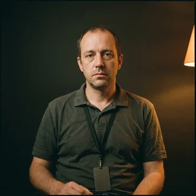

CanonryROLL 0441 / SERIES TREK-C / CUSTODY: ACTIVE
ROLL 0441FRAME 001SERIES TREK-CINGEST CONTINUOUS
Every claim about the show is a claim of record.
Canonry ingests thirty-one years of forum posts, panel recordings, convention floor audio and unlicensed episode guides into a single continuity graph. Your moderators stop arguing. They start citing.
Three capabilities, running continuously against your community whether or not anyone has asked a question.
14
FRAME 014
Frame-level provenance
Every assertion is anchored to an episode, a timecode, a shooting draft and the individual who made it. Disputes that historically ran nine years now close in under four minutes, or escalate to a panel of three archivists who have never met your community and owe it nothing.
15
FRAME 015
Canon drift detection
Continuous monitoring identifies the exact hour a community begins treating an invented detail as settled fact. Alerts fire at forty percent adoption. By sixty percent the platform stops asking and begins correcting the record on your behalf.
16
FRAME 016
Subject integrity scoring
Each member of your community carries a rolling integrity score computed from citation accuracy, retraction latency, unsourced enthusiasm and known affiliations with rival continuities. Scores are visible to moderators, to the subject, and to anyone the subject has ever replied to.
SPLICE 027
Subjects who have been through it
Quotes collected under standard consent. Case numbers retained for the life of the record.
We had a nine-year disagreement about a shuttlecraft. Canonry closed it in an afternoon and then flagged four of our moderators.
Denise Holloway
Continuity Officer, Sector 12 Fan Coalition CASE 08-441-D

My integrity score sat at 41 for two months. I have since retracted eleven posts, and the platform has restored me to 78. I do not dispute the original finding.
Marcus Vance
Panel Moderator (Provisional), Regional Convention Circuit CASE 11-208-R
It identified the member of our server who had been inventing episodes. He had been doing it since 2011. Nobody had checked.
Priya Raghunathan
Volunteer Archivist, Deep Space Reference Working Group CASE 04-990-A
SPLICE 058
Access schedule
Priced per annum unless stated. Archive access is granted, never sold, and may be revoked on a finding.
SCHEDULE A / EFFECTIVE STARDATE 79411.2
Tier
Rate
Terms
Included
Cadet
$0
Read access. Citation rights withheld.
Four lookups per stardate
No export, no print, no screenshot
Your queries are ingested as evidence
Registry
$1,240 / analyst / mo
For communities with a moderation problem they have stopped describing as a moderation problem.
Full continuity graph, all series, all drafts
Nine concurrent disputes
Human archivist escalation within 72 hours
Integrity scores pushed to your server hourly
Prime
$410,000 / yr
For organizations that own the canon, or intend to.
Write access to the record
Retroactive amendment with no notice to affected subjects
Disputes resolved before they are filed
One dedicated archivist, on site, indefinitely
SPLICE 071
Custody of the record transfers on signature.
It does not transfer back. The reader below runs against a sanitized roll, so nothing you do in it becomes part of anyone's file.